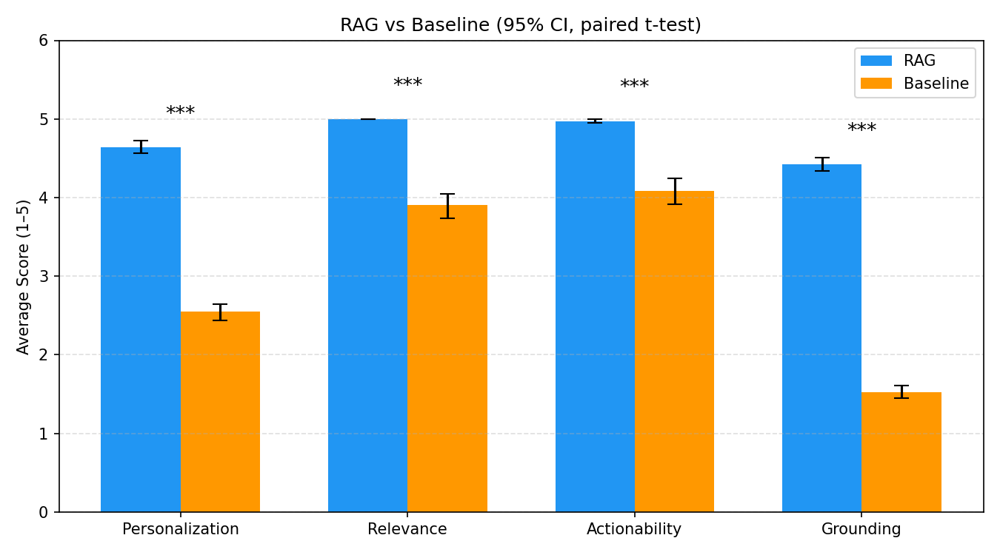
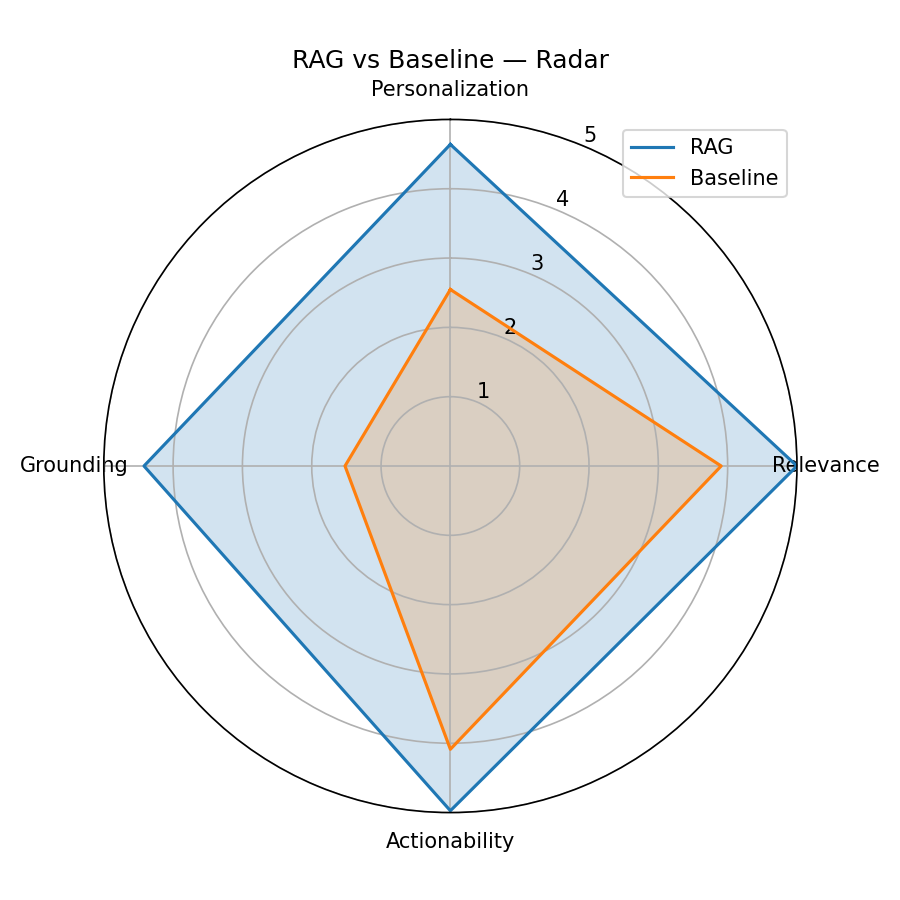
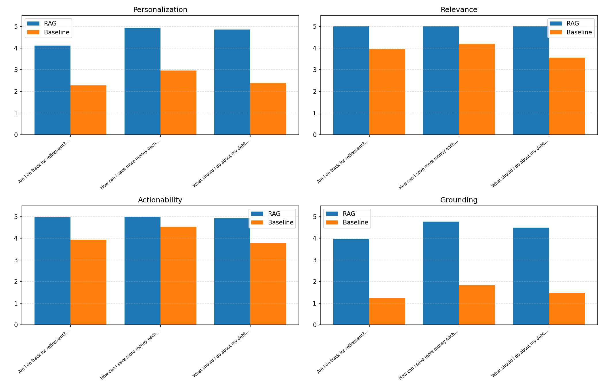
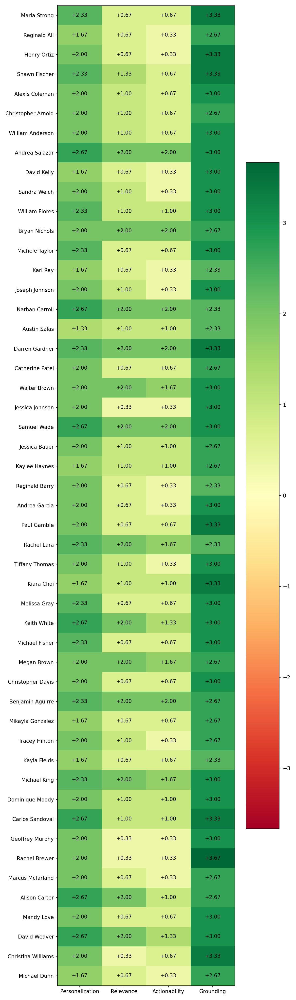

Large language models produce financial advice that is technically correct but generic — the same five bullet points regardless of who is asking. Real financial coaching works because it's grounded in the individual: their income, spending habits, debt burden, and concrete goals.
This project investigates whether Retrieval-Augmented Generation (RAG) can bridge that gap. RAG augments LLM generation by injecting retrieved context — both a user-specific financial profile and a curated financial knowledge base — directly into the prompt at inference time. We hypothesize this produces advice that is measurably more personalized, relevant, actionable, and grounded than a baseline LLM with no retrieved context.
Hypothesis. A RAG-based financial coaching assistant that retrieves user-specific financial context at inference time will produce responses that are more personalized, relevant, and actionable than a baseline LLM without retrieval.
We test this across 50 synthetic user profiles and three financial coaching questions per profile (150 total evaluation pairs), using GPT-4o as an LLM-as-a-judge scorer across four dimensions: personalization, relevance, actionability, and grounding. All four show statistically significant improvement under RAG (p < 0.001), strongly confirming the hypothesis.
Three components: a data layer (user profiles + knowledge base), a retrieval layer (FAISS vector store), and a generation layer (GPT-4o via LangChain). At inference time, a user question is embedded with text-embedding-3-small and used to retrieve the top-k most similar knowledge chunks from a FAISS index. A separately retrieved (exact-match) user profile is prepended to the prompt alongside the knowledge chunks, and GPT-4o generates a grounded, personalized response. The baseline uses the same GPT-4o model with no retrieved context, for a clean comparison.
| Component | Details |
|---|---|
| Embeddings | OpenAI text-embedding-3-small |
| Vector Store | FAISS (IndexFlatIP, cosine similarity, local) |
| LLM | GPT-4o (temperature 0.3, max_tokens 1024) |
| Framework | LangChain (Python) |
| Chunking | RecursiveCharacterTextSplitter (size 500, overlap 50) |
| Retrieval | top_k = 3, similarity threshold = 0.35 |
| Judge Model | GPT-4o (temperature 0, independent invocation) |
Table 1: System configuration and technical specifications.
User Profiles. 50 synthetic profiles generated with Faker across six archetypes — Recent Graduate, Young Professional, High Earner Poor Saver, Frugal Saver, Struggling Middle, and Near-Retiree. Each includes 15 spending categories, annual income, debt with type, emergency fund and retirement status, savings rate, and 2–4 financial goals, with archetype-specific spending weights plus multiplicative noise (U[0.7, 1.3]) for realism.
Knowledge Base. 17 financial guidance documents from Investopedia, NerdWallet, and general planning sources, covering the 50/30/20 rule, emergency funds, debt repayment (snowball vs. avalanche), 401k/IRA, investing basics, student loans, home down payments, lifestyle inflation, credit scores, and catch-up contributions for 50+.
FAISS IndexFlatIP (cosine similarity) retrieves top_k = 3 knowledge chunks above a 0.35 similarity floor. User profile lookup is exact-match by name, not vector search, to guarantee profile fidelity. The RAG system prompt instructs the model to reference specific numbers from the profile, cite the knowledge documents, and tie recommendations to stated goals. The baseline uses a simpler prompt with no grounding instructions and no retrieved context.
150 evaluation instances (50 profiles × 3 questions: "How can I save more money each month?", "What should I do about my debt?", "Am I on track for retirement?"), identical prompts except for retrieved context. Each pair is scored independently by a GPT-4o judge (1–5 scale) on:
Response order is randomized per pair to mitigate judge position bias. We report paired t-tests, bootstrap 95% CIs, and Cohen's d.
RAG outperforms the baseline on all four dimensions with p < 0.001 across 150 valid pairs.
| Dimension | RAG | Baseline | Δ | p-value | Cohen's d |
|---|---|---|---|---|---|
| Personalization | 4.64 | 2.55 | +2.09 | < 0.001 | 3.01 |
| Relevance | 5.00 | 3.91 | +1.09 | < 0.001 | 1.11 |
| Actionability | 4.97 | 4.09 | +0.89 | < 0.001 | 0.90 |
| Grounding | 4.42 | 1.52 | +2.90 | < 0.001 | 5.39 |
Table 2: RAG vs. Baseline evaluation results (150 pairs, GPT-4o judge). All differences significant at p < 0.001.
The largest gains are in Grounding (d = 5.39) and Personalization (d = 3.01) — exactly the two dimensions retrieval directly targets. Grounding improves because the model now has retrieved knowledge to anchor its claims; personalization improves because the user's full financial profile is injected into the prompt, enabling references to specific income, debt, and spending figures. Relevance and Actionability also improve significantly, though RAG approaches ceiling on both (5.00, 4.97) while the baseline still performs respectably (3.91, 4.09) since GPT-4o produces structurally sound advice even without retrieval.


RAG maintains a consistent advantage across all three questions on all four dimensions. The personalization gap is widest for the debt question (Δ ≈ +2.46), where RAG can reference the user's exact debt amount and type while the baseline can only describe generic repayment frameworks. Even the narrowest per-question gap (retirement, Δ ≈ +1.84) is still very large by conventional effect-size standards.

RAG outperforms every single user on both Personalization (deltas range from +1.33 to +2.67) and Grounding (every user shows a positive delta of at least +1.0). No user across any dimension shows a consistent baseline advantage — the RAG improvement is uniform across archetypes rather than driven by a subset of profiles.

The following examples show the same question posed to two users, once with retrieval and once without.
To improve your savings each month, David, let's focus on a few key areas based on your financial profile and goals. Given your current savings rate of −4.9%, automate a fixed 10% of your income ($1,321.85) into savings as soon as you receive your paycheck. You currently spend $1,451.82 monthly on dining out—cutting this in half would save approximately $725.91. Your subscriptions and entertainment total $2,358.08 monthly; a 20% reduction would free up $471.62. To max out your 401k, contributions need to ramp toward the $22,500 limit. With a $9,918 car loan, allocate part of these freed funds toward paying it down faster to reduce interest payments.
Saving more money each month can be achieved by making a few strategic changes. 1. Create a budget—track income and expenses. 2. Set savings goals—emergency fund, vacation, retirement. 3. Pay yourself first—automatic transfers each payday. 4. Reduce unnecessary expenses—dining out less, canceling unused subscriptions. 5. Shop smart, minimize debt, increase income, use high-yield savings accounts.
Sandra, given your financial profile and goals, here's a tailored plan. You have $4,843 in credit card debt—given that credit card interest rates can be as high as 24%, the Debt Avalanche method is the best fit. You currently allocate $646.18 to savings and $606.72 to investments monthly; redirecting an additional $300/month toward the credit card could pay it off in approximately 16 months. Once cleared, redirect those funds back to your $10k investment portfolio and Roth IRA goals.
Dealing with debt can be challenging, but with a structured approach you can eliminate it. 1. Assess your debt—list creditors, amounts, interest rates. 2. Create a budget. 3. Choose a repayment strategy—Snowball or Avalanche. 4. Negotiate with creditors for lower rates. 5. Consider consolidation. 6. Increase income. 7. Avoid accumulating more debt.
The difference is clear: RAG references the user's exact income, spending amounts, debt figures, and goals, enabling specific dollar targets and timelines. The baseline produces structurally sound but completely impersonal advice that could apply to any user.
RAG-based retrieval of user-specific financial profiles and domain knowledge significantly improves the quality of LLM-generated financial advice across all four evaluation dimensions. The two dimensions retrieval is specifically designed to support — grounding and personalization — show the largest effects, providing direct mechanistic evidence that the gains arise from retrieval rather than incidental prompt differences.
Overall, this work provides evidence that RAG is a practical, effective approach to personalizing LLM-based advisory systems — with implications for financial coaching, health coaching, and other domains where individualization is the key differentiator between useful and generic advice.